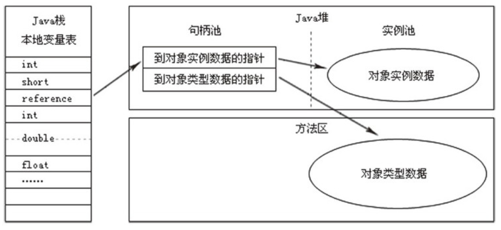
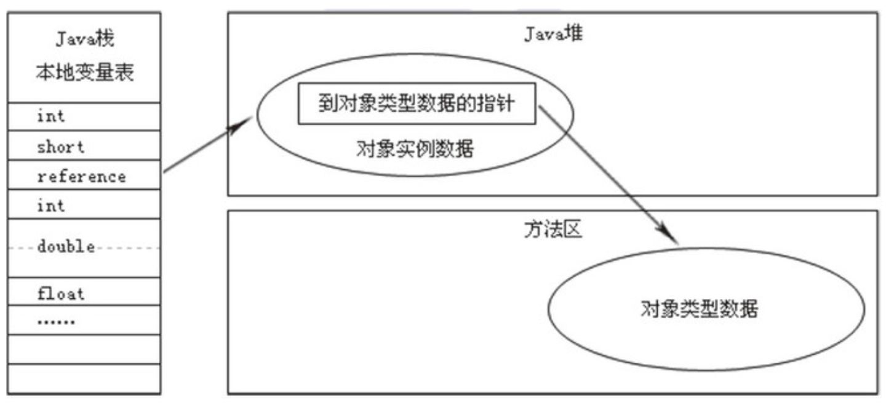

原文连接:https://www.cnblogs.com/heyonggang/p/11458023.html
《JVM从小白学成大佬》系列推出到现在，收到了很多小伙伴的好评，也收到了一些小伙伴的建议，在此表示感谢。
有几个小伙伴提出了希望出一篇介绍对象的创建及访问，猿人谷向来是没有原则的，小伙们要求啥，咱就尽力满足，毕竟文章就是对自己学习的一个总结及和各位小伙伴交流学习的机会。话不多说，直接开撸！
1 创建对象
在Java程序运行过程中无时无刻都有对象被创建出来，java中对象可以采用new或反射或clone或反序列化的方法创建。接下来我们我们介绍在虚拟机中，对象（限于普通Java对象，不包括数组和Class对象等）的创建过程。
字节码new表示创建对象，虚拟机遇到该指令时，从栈顶取得目标对象在常量池中的索引，接着定位到目标对象的类型。接下来，虚拟机将根据该类的状态，采取相应的内存分配技术，在内存中分配实例空间，并完成实例数据和对象头的初始化。这样，一个对象就在JVM中创建好了。
实例的创建过程，首先根据从类常量池中获取对象类型信息并验证类是否已被解析过，若确保该类已被加载和正确解析，使用快速分配（fast allocation）技术为该类分配对象空间；若该类尚未解析过，则只能通过慢速分配（slow allocation）方式分配实例对象。实例的创建流程如下图所示。

对象创建的基本流程：
- 验证类已被解析。
- 获取instanceKlass，确保Klass已完全初始化。
- 若满足快速分配条件，则进入快速分配流程。
- 若不满足快速分配条件，或者快速分配失败，则进入慢速分配流程。
1.1 快速分配
如果在实例分配之前已经完成了类型的解析，那么分配操作仅仅是在内存空间中划分可用内存，因此能以较高效率实现内存分配，这就是快速分配。
根据分配空间是来自于线程私有区域还是共享的堆空间，快速分配可以分为两种空间选择策略。HotSpot通过线程局部分配缓存技术(Thread-Local Allocation Buffers,即TLABs)可以在线程私有区域实现空间的分配。
可以通过VM选项UseTLAB来开启或关闭TLAB功能。
根据是否使用TLAB，快速分配方式有两种选择策略：
- 选择TLAB：首先尝试在TLAB中分配，因为TLAB是线程私有区域，故不需要加锁便能够确保线程安全。在分配一个新的对象空间时，将首先尝试在TLAB空间中分配对象空间，若分配空间的请求失败，则再尝试使用加锁机制在Eden区分配对象。
- 选择Eden空间：若失败，则尝试在共享的Eden区进行分配，Eden区是所有线程共享区域，需要保证线程安全，故采用原子操作进行分配。若分配失败，则再次尝试该操作，直到分配成功为止。
实例空间分配成功以后，将对实例进行初始化。待完成对象的空间分配和初始化后，就可以设置栈顶对象引用。当然，对象的空间分配和初始化操作都是基于从类常量池中获取对象类型并确保该类已被加载和正确解析的前提下进行的，如果类未被解析，则需要进行慢速分配。
1.2 慢速分配
之所以成为慢速分配，正是因为在分配实例前需要对类进行解析，确保类及依赖类已得到正确的解析和初始化。慢速分配是调用InterpreterRuntime模块_new()进行的，实现代码如下。
// 确保要初始化的类不是抽象类型
klass->check_valid_for_instantiation(true, CHECK);
// 确保类已初始化
klass->initialize(CHECK);
// 分配实例
oop obj = klass->allocate_instance(CHECK);
// 在线程栈中设置对象引用
thread->set_vm_result(obj);2 对象的访问定位
建立对象是为了使用对象，Java程序需要通过栈上的reference数据来操作堆上的具体对象。由于reference类型在Java虚拟机规范中只规定了一个指向对象的引用，并没有定义这个引用应该通过何种方式去定位、访问堆中的对象的具体位置，所以对象访问方式也是取决于虚拟机实现而定的。
目前主流的访问方式有使用句柄和直接指针两种：
如果使用句柄访问的话，那么Java堆中将会划分出一块内存来作为句柄池，reference中存储的就是对象的句柄地址，而句柄中包含了对象实例数据与类型数据各自的具体地址信息，如下图所示。
如果使用直接指针访问，那么Java堆对象的布局中就必须考虑如何放置访问类型数据的相关信息，而reference中存储的直接就是对象地址。即使用直接指针访问在对象被移动时reference本身需要被修改，reference存储的就是对象地址。如下图所示。

这两种对象访问方式各有优势：
- 使用句柄来访问的最大好处就是reference中存储的是稳定的句柄地址，在对象被移动（垃圾收集时移动对象时非常普遍的行为）时只会改变句柄中的实例数据指针，而reference本身不需要修改。
- 使用直接指针访问方式的最大好处就是速度更快，它节省了一次指针定位的时间开销，由于对象的访问在Java中非常频繁，因此这类开销积少成多后也是一项非常可观的执行成本。
HotSpot就是使用第二种方式进行对象访问的，但从整个软件开发的范围来看，各种语言和框架使用句柄来访问的情况也十分常见。